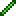
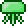

Green Jellyfish
| Drops | |
|---|---|
| Coins: | 8 |
| Item | Rate |
| 1-4  Glowsticks | 100% |
| Green Jellyfish | |
|---|---|
|  | |
| Statistics | |
| Type | Fish Enemy |
| Environment | Water Underground |
| AI Type | Jellyfish |
| Damage | 80 |
| Max Life | 120 |
| Defense | 30 |
The Green Jellyfish is a hardmode enemy found in underground and is far stronger than Pink or Blue Jellyfish. They have a chance to inflict Silenced when attacking.
Depending on whether it's killed inside an Underground Hallow or Underground Corruption Soul of Light or Soul of Night can be dropped. They can be quite a shock to players first entering hardmode because they do a ton of damage; even more than lava!
History
- 1.1: Introduced.